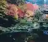
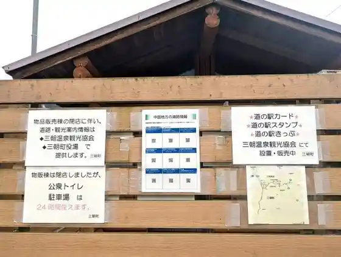
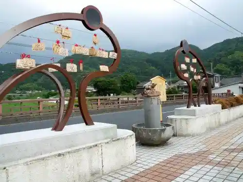
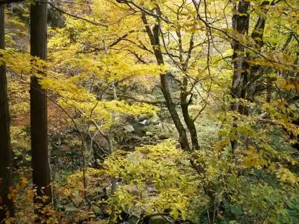

Santoku Sanza Butsuji Tonyu Do
Misasa, Tottori · 0858-43-2666 · Official / source link
Misasa Onsen
Misasa, Tottori · 0858-43-0431 · Official / source link

Roadside Station Misasa Raku City Rakuza
Misasa, Tottori · 0858-43-0431 · Official / source link

Koi Tani Hashi (Enmusubi Kajika Kaeru)
Misasa, Tottori · 0858-43-0431 · Official / source link

Kojika Kei
Misasa, Tottori · 0858-43-0431 · Official / source link

Misasa Shrine
Misasa, Tottori · 0858-43-0431 · Official / source link
Santoku Yama
Misasa, Tottori · Official / source link
Kabu Yu
Misasa, Tottori · 0858-43-0431 · Official / source link
Misasa Hashi Kajika Hashi Koi Tani Hashi
Misasa, Tottori · 0858-43-0431 · Official / source link
Togei Experience
Misasa, Tottori · 0858-43-1116 · Official / source link
Misasa Onsen Kawara Furo
Misasa, Tottori · 0858-43-0431 · Official / source link
Misasa Onsen Yanase Park
Misasa, Tottori · 0858-43-0431 · Official / source link
Kyurii Zo
Misasa, Tottori · 0858-43-0431 · Official / source link
Misasa Onsen no Ashiyu
Misasa, Tottori · 0858-43-0431 · Official / source link
Misasa Baiorin Art Museum
Misasa, Tottori · 0858-43-3111 · Official / source link
Kajikawa Rihatsuten
Misasa, Tottori · 0858-43-2126 · Official / source link
Misasa Masamune
Misasa, Tottori · 0858-43-0856 · Official / source link
Misasa Town Hall
Misasa, Tottori · 0858-43-1111 · Official / source link